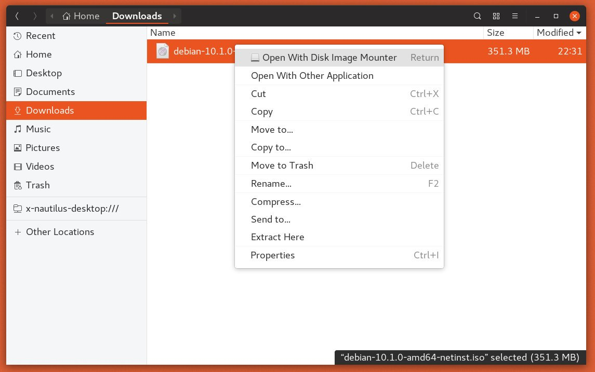

如何在 Linux 上挂载 ISO 文件
•
约 600 字
, 预计阅读时间 4 分钟
ISO 文件是一个存档文件，通常包含 CD 或 DVD 的完整映像。例如，大多数操作系统(例如 Windows ， Linux 和 macOS) 均作为 ISO 映像分发。
在本教程中，我们将说明如何在 Linux 上挂载 ISO 文件。
如何使用命令行挂载 ISO 文件
mount 命令允许您在目录树中的特定安装点附加(安装)ISO 文件。
本节中的说明应适用于任何 Linux 发行版，包括 Ubuntu ， Debian 和 CentOS 。
-
首先创建挂载点，它可以是任何位置：
sudo mkdir /media/iso -
通过输入以下
mount命令将 ISO 文件安装到安装点：sudo mount /path/to/image.iso /media/iso -o loop这里重要的是
-o loop选项。它告诉命令将循环设备映射到指定的 ISO 文件，然后将该设备安装在指定的安装点上。不要忘记将
/path/to/image.iso替换为您的 ISO 文件的路径。 -
请使用以下
ls命令查看 ISO 映像内容，：ls /media/iso您也可以打开文件管理器以查看 ISO 内容。
-
通过使用以下
umount命令卸载 ISO 文件，后跟已挂载映像的目录：sudo umount /media/iso如果文件系统正在使用中，则
umount命令无法卸载文件系统。
使用 Gnome 挂载 ISO 文件
如果您正在运行使用 Gnome 作为桌面环境的 Linux 发行版，则可以使用 Gnome 的磁盘映像安装程序应用程序安装 ISO 文件。
找到您要挂载的 ISO 文件，然后右键单击它。在上下文菜单中，单击“使用磁盘映像安装程序打开”选项。

挂载映像后，设备图标应出现在桌面上。双击它将打开 Gnome 文件管理器。
要卸载 ISO 文件，请右键单击设备图标，然后选择“卸载”。
结论
在 Linux 中，您可以使用以下 mount 命令挂载 ISO 文件。桌面用户可以使用图形工具，例如 Gnome Disk Image Mounter 。